Does On-Policy Distillation Really Distill? From Noisy Teacher to Self-Improvement
这篇论文由普渡大学计算机科学系的 Yi Ding 和 Ruqi Zhang 完成，于 2026 年 8 月 31 日公开。它不只提出一个新的后训练算法，而是先对 On-Policy Distillation（OPD）做机制拆解：教师给学生轨迹的 token 优势含有多少噪声？学生的改进究竟来自教师知识，还是来自更简单的分布重塑？论文入口为 arXiv:2608.31046；作者已公开 GitHub 实现 和 Hugging Face 模型集合。
在策略蒸馏中，教师必须评分学生自行生成、对教师而言本就离策略的轨迹；这些 token 优势存在大量与最终答案正确性方向相反的噪声，可学生对保留或删除噪声几乎不敏感。如果教师信号既不可靠又非改进所必需，OPD 究竟在“蒸馏”什么？
1. 背景和问题
大模型推理后训练的一条主线是 RLVR：对同一道问题采样多条响应，用可验证答案的正误构造奖励，再在组内归一化成优势。这类方法的优点是信号来源清楚，缺点则是长推理链只在响应末端得到一个粗粒度结果；当一组响应全对或全错时，组内优势还可能全部变成零。OPD 看似提供了解法：让更强教师在学生采样的每个前缀上计算 token 概率，以教师与学生的 log-prob 差作为稠密优势。相比只有终局正误，每个 token 都获得信用信号，理论上能持续把学生推向教师分布。
但 OPD 有一个容易被“教师更强”掩盖的假设：教师评分的前缀不是它自己生成的，而是来自学生。随着师生分布距离增大，学生轨迹对教师越来越离策略，教师在这些奇怪前缀上给出的 token 偏好未必等价于对推理正确性的指导。作者避免去为中间思维 token 人工标注“正确优势”，转而聚焦有 verifier 的 \boxed{} 最终答案 token：正确答案上优势为负，或错误答案上优势为正，都定义为方向噪声。这个定义不能审核全部中间步，但它给出了可复核的下界：连最终可验证 token 的方向都冲突，至少说明 teacher advantage 并不稳定等于“正确知识”。
论文以 Qwen3-1.7B 为学生，从 DAPO-17k 中随机取 500 道题，每题各采一条正确和错误响应，再分别用 Qwen3-4B、30B-A3B 和 235B-A22B-Instruct 做教师。4B 教师下，20.4% 的正确轨迹答案 token 得到负优势，40.8% 的错误轨迹却得到正优势，总噪声率为 30.6%。换成 30B-A3B 后总噪声率升至 34.7%；235B-A22B 甚至对 97.8% 的正确答案 token 也给负优势，对错误答案给负优势的比例为 96.6%，整体噪声约 50.6%。更大教师并没有提供更符合正误的方向，反而更像对学生所有离策略答案一律低评。
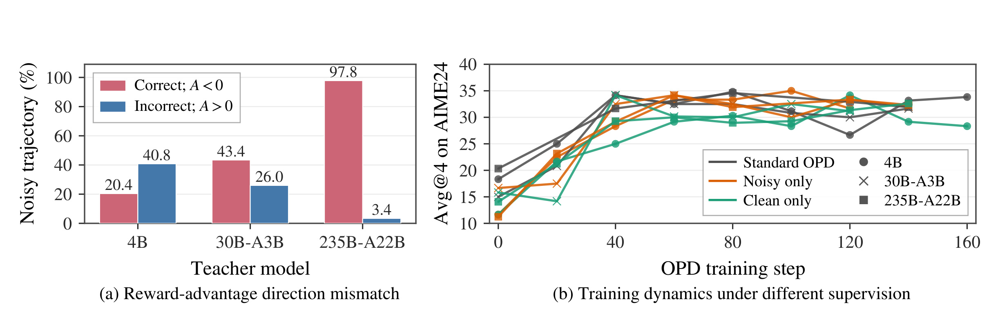
Figure 2 左图要与“教师规模”一起读：从 4B 到 235B-A22B，红色的“正确却 A<0”快速上升，而蓝色的“错误却 A>0”下降，两者不是互相抵消，而是表明大教师对学生 token 形成了近乎无关正误的系统性负偏好。右图更关键：标准 OPD、只保留含噪声的轨迹、只保留干净轨迹，三种设置在近似的梯度步数后收敛到可比的 AIME24 Avg@4。它并不能证明每个 teacher token 都无用，但足以否定“学生改进主要来自正确教师方向”的简单解释。这也将问题从“如何减少教师噪声”推向了“为什么不靠教师方向也能学”。
这一转向对后训练研究很重要。如果把 OPD 完全理解为行为匹配，工程上就会投入更大教师、共享词表和教师 logits 服务；而 Figure 2 暗示，这些成本可能不是核心收益的必要来源。论文后续要做的不是直接把 OPD 判为无效，而是逐层剥离它的三个组件：全部 token、教师给出的精细优势、优势的正负方向。剩下的最小机制再成为 OPSA 的设计起点。
这里还需要把 OPD 和 OPSD 分清。OPD 直接用外部强教师打分，要求师生词表可对齐，且必须得到教师的逐 token logits；OPSD 虽然把外部教师换成了带参考答案等 hint 的学生自身，但它仍然在学生无 hint 采样的前缀上，用另一个条件分布发优势。两者都没有消除根本问题：打分者所处的分布与真正产生轨迹的分布不一致。OPSD 还要承担 hint 的制作成本和信息泄漏风险。因此论文把 RLVR、OPD、OPSD 放在同一张路线图里，不是为了宣称它们的优化形式完全相同，而是对照它们分别从 verifier、teacher 或 hint 引入了什么外部信息。
“噪声”的证据也应该保持边界。教师对一个正确答案 token 给负优势，并不逻辑上等于教师整条推理都判错：教师可能在同一前缀上更偏好另一种等价格式，或者对前缀早已偏离自己分布的轨迹整体低评。反过来，错误答案 token 得到正优势，也可能只是该字符在当前异常前缀中比学生分布更常见。所以这个指标测量的是“优势方向与可验证正误不一致”，而非完整思维过程的标注错误率。它之所以仍具有破坏力，是因为 OPD 的解释本来就依赖教师 token 优势提供可信的局部方向；一旦连最容易验证的答案位置都频繁方向冲突，“稠密”就不再自动意味着“可信”。
只训噪声轨迹的控制实验则把质疑再推进一步。它不是简单比较不同训练样本数的最终点，而是按“轨迹是否含噪声信号”分区，对比 standard、noisy-only 和 clean-only 在类似梯度步数下的学习曲线。三条曲线可比并不意味着它们学到了完全相同的行为，却说明“去除方向噪声是产生 Avg@4 改进的必要条件”这一说法站不住。这才为后续的 token 选择和优势符号消融创造了清晰起点。
从更广的大模型后训练角度看，这个问题关于“稠密信号”与“外部知识”是否必然绑定。RLVR 的信号虽稀疏，却能得知整条轨迹是否达成目标；OPD 信号遍布每个 token，但它衡量的是教师在当前学生前缀上的相对概率，不是该 token 对最终正确性的因果贡献。当教师和学生接近时，这两种解释可能很难区分；当教师规模上升、分布差距扩大，“教师不像这样说”和“这样说会导致错误”就更不是一回事。本文的噪声与过滤实验实际上在逼问：模型改进所需要的是一个更强主体的具体偏好，还是一个能重塑自身分布的局部梯度？OPSA 选择了后者，并将这个选择变成可以逐步验证的算法。
2. 方法
2.1 从 OPD 目标到有效 token 与负优势
OPD 先让学生策略 $\pi_s$ 在问题 $x$ 上采样响应 $y$，再在相同的学生前缀上计算学生和教师 $\pi_t$ 的 reverse KL。公式（1）为：
符号解释：$x$ 是输入问题，$y=(y_1,\ldots,y_{|y|})$ 是学生采样的完整响应，$y_{<i}$ 是第 $i$ 个 token 前的学生前缀，$\pi_s$ 与 $\pi_t$ 分别是学生和教师条件分布。期望仍对学生分布取，所以教师不是在自己熟悉的轨迹上教，而是在学生可能偏离很远的状态上打分。训练时把每个 token 的 log-ratio 写成优势，得到公式（2）：
符号解释：$A_i$ 是教师和学生对已采样 token $y_i$ 的 log-prob 差；$A_i>0$ 意味着教师比学生更偏好该 token，$A_i<0$ 则希望压低它。$|y|$ 用于对响应长度归一化。这一形式看起来是稠密蒸馏，但梯度本身又会过滤大量信号。设 $z_t^v$ 是位置 $t$ 上词表 token $v$ 的 logit，公式（3）给出：
符号解释：$y_t$ 是实际被采样的 token，$v\neq y_t$ 表示同位置的其他候选。当 $|A_t|$ 接近零时，所有 logit 更新都弱；当学生对 sampled token 已经有 $\pi_s\approx1$ 的高置信时，它自身的更新也被 $1-\pi_s$ 压低。因而真正有效的不是“每个 token 都有教师分数”，而是少数低 logp、非饱和且 $|A_t|$ 不小的 token。论文的第一步机制约简，就是从全序列 OPD 中只留下学生 logp 最低的那一小部分 token。
2.2 熵决定负信号的强度
低 logp 并不是单一语义。在高熵位置，多个合理候选分摊概率质量，即使头部 token 也会有相对低的 logp；在低熵位置，一个 token 占绝对优势，偶然采到的尾部 token 则真的像是错误分支。如果对两者都给相同负优势，就没有利用“该位置是明确决策还是推理岔口”这层内部信息。作者在每条响应的 lowest-20%-logp 位置内取熵最小值 $H_{\min}$ 和最大值 $H_{\max}$，再用公式（4）调节负信号：
符号解释：$H_i$ 是学生在位置 $i$ 的 token 分布熵，$r_i\in[-1,1]$ 表示它在当前 rollout 内的相对熵水平，$A_i^{\mathrm{fix}}$ 是固定负基准，$\delta$ 控制熵和负优势幅度的相关方向。$\delta=1$ 使高熵 token 受到更强负信号，$\delta=-1$ 则反过来，$\delta=0$ 回到固定负优势。这里的标准化是 rollout 内的相对量，不需要跨题目校准绝对熵，也不依赖教师、标签或 verifier。
2.3 OPSA 的训练目标与教师免除
在消融中确定“高熵给更强负信号”后，OPSA 将 $A_i^{\mathrm{fix}}=-3/4$、$\delta=1$ 代入公式（4），并只对每条学生响应中 logp 最低的 20% 位置更新。完整目标是公式（5）：
符号解释：$S_{\mathrm{lowest20}}$ 是当前响应内按学生 logp 排名最低的 20% 位置集合，$\theta$ 是学生参数，$A_i^{\mathrm{dyn}}$ 从低熵端的 $-1/2$ 线性变到高熵端的 $-1$。负优势会降低当前 sampled token 的 logit；对未采样 token，公式（3）中的更新量与其现有概率成比例，所以释放的概率质量主要流向头部候选，而非平均撒向整个词表。OPSA 的核心不是为 token 发明新的外部奖励，而是把学生自身的低 logp 与相对熵转成“压多少”的稠密内部信号。
这个流程的输入只有问题和学生 rollout：前向时保留学生自身的 token logp 与熵，响应完成后选出 Slowest20，按相对熵生成负优势，再优化 $\mathcal{L}_{\mathrm{OPSA}}$。它不要求共享教师词表，不需要教师的白盒 logits，不需要参考答案作 hint，也不读取可验证 reward。这些操作全部只存在于训练时；推理时不有额外教师、重排或 token 过滤器，直接用更新后的学生模型解码。所谓“教师免除”因此既是监督免除，也是训练服务中一套大模型前向的免除。
优化上还有一个容易忽略的非对称性：OPSA 只显式选中 sampled token，但 softmax 梯度会联动同位置整个词表。负优势对 sampled token 的压制与 $1-\pi_s(y_i)$ 成比例，对未采样 token 的增加则与它们自身 $\pi_s(v)$ 成比例。所以方法不是把被压的质量均匀分配给所有词，而是交给本来就较可能的替代项。这一非对称性是头部内重分配能成立的数学来源，也提示复现时不能用“直接从尾部概率中减去常数”的推理时规则代替训练梯度。
2.4 尾部抑制、头部重分配与推理 fork
公式（3）解释了负优势如何改分布。高熵位置若偶然采到尾部 token，OPSA 会明显压低它，释放的质量按未采样 token 的当前概率流向头部；若采到的是某个头部 token，它被轻微压低后，质量主要流向其他头部候选，于是高熵岔口不会只剩唯一路径。低熵位置的尾部 token 被压低，能让高置信答案更尖锐；而那个原本概率很高的头部 token 通常不在 lowest 20%，所以 OPSA 直接跳过。这是“整体熵降低”与“关键 fork 保留探索”可以同时成立的原因。
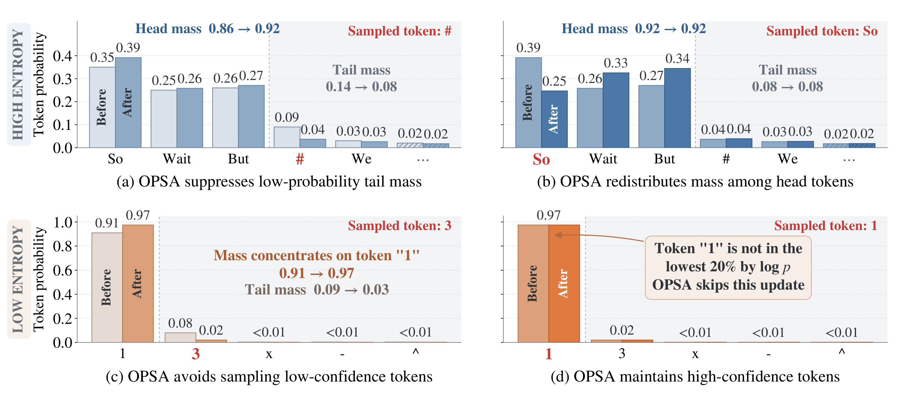
Figure 6 要按行和列同时读。上排高熵位置中，左图 sampled token 是概率仅 0.09 的 #，更新后尾部总质量由 0.14 降到 0.08，头部由 0.86 升到 0.92；右图 sampled token 是头部的 So，头部总质量基本不变，但 So/Wait/But 之间变得更均衡。下排低熵位置中，偶然采到 3 时，主候选 1 从 0.91 升到 0.97，尾部由 0.09 降到 0.03；真正采到 1 时，它因 logp 太高不进入 Slowest20，分布保持不动。因而 OPSA 不是简单的全局熵最小化；它依赖采样事件和 logp 排名，在错误尾部与合理 fork 之间形成不同的局部动力学。
论文把 wait、but、perhaps等反思词看作高熵 fork 的可观测表征：在这些位置，多个头部候选可以引向不同的推理分支。OPSA 压低已采样 token 时，不是把质量交给极小尾部，而是主要交给其他头部词，从而让重试、改口和自我检查更容易被采样。这个机制解释有一个可被实验推翻的预测：如果把反思 fork 从训练目标里遮掉，响应长度和准确率收益应该一起消失。第 3 章的 Figure 8 就检验这一预测。
3. 实验结果
3.1 先定位 OPD 究竟学到了什么
在提出 OPSA 之前，作者先用 Qwen3-1.7B 学生和 Qwen3-4B-Instruct 教师解剖 OPD。优势分布中，29.2% token 的优势精确为零，51.7% 的 $|A|\le10^{-4}$。近零优势高度集中在学生高 logp token：当保留的是最高 logp 部分时，其中近零优势比例可达 97.5% 和 96.6%。作者只在高 logp token 上训练，再把原始优势换成 $[-1,1]$ 均匀随机值，AIME24 性能也几乎不变。这和公式（3）的梯度消失分析一致：高 logp token 占据了序列大部分，却不是改进的主要来源。
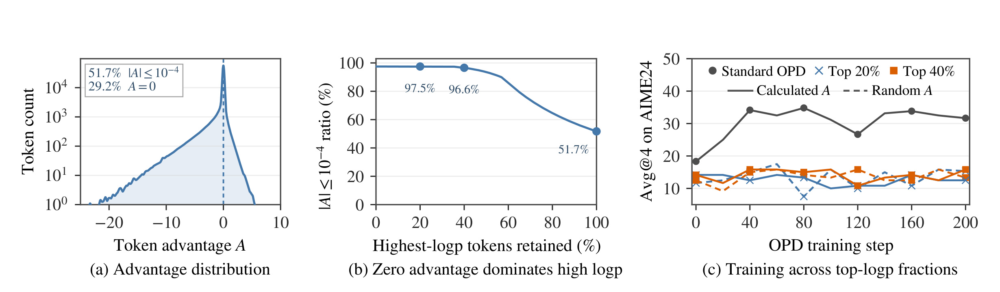
Figure 3 的三个子图构成一条证据链。左图先显示优势并非平滑展开，而是大量堆在零附近；中图把这个现象定位到学生最自信的 token；右图再做干预，说明只使用这些 token 时，无论原始优势还是随机优势都不能让 Avg@4 显著上升。它比单看分布更有说服力，因为实验已经把“优势值太小”和“学生概率太饱和”对梯度的综合影响放进真实训练曲线。因此后续只训 lowest-logp token 并不是为了省算力的随意剪枝，而是对 OPD 有效梯度的经验定位。
第二个对照只留 lowest 20% token，分别使用标准 OPD 优势、固定 $A=-0.5$ 和固定 $A=0.2$。如果收益真来自教师精细地指出哪个 token 更好，把全部优势换成同一个负常数应该失效。实验恰好相反：固定负优势能让准确率持续上升，响应长度也像 OPD 一样逐渐增到约 12k token；固定正优势却在前 40 步内将响应长度压到近零，同时梯度范数爆炸，最终只生成混乱 token。
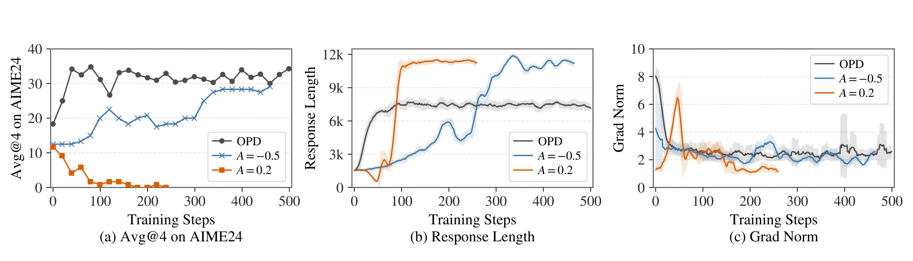
Figure 4 不应被读成“任意负奖励都有用”。它的严格结论是：在学生 on-policy 采样且只选低 logp token 的条件下，负方向比教师优势的精细数值更关键。左图中 $A=-0.5$ 的 Avg@4 起点不高，却随步数稳定爬升；中图显示其长度增长轨迹与 OPD 方向一致，但时序并不完全重合；右图提醒正优势崩溃不只是“准确率没涨”，而是出现异常梯度与退化生成。因而论文推出的是一个可检验机制：OPD 的实际收益可能主要是在压低学生自己偶然采到的低概率分支。
第三个对照把固定负优势变成公式（4）的熵自适应形式。$\delta=1$ 代表高熵位置受更强负信号，$\delta=0$ 是固定负优势，$\delta=-1$ 则把更强信号给低熵位置。最终 $\delta=1$ 的 AIME24 Avg@4 达 50.0%，高于标准 OPD 的 35.13%；$\delta=-1$ 在约 350-450 步间出现不稳定，梯度范数长期更高，最终还略差于固定负优势。这个结果决定 OPSA 不是对 Slowest20 一刀切，而要按熵分配压制强度。
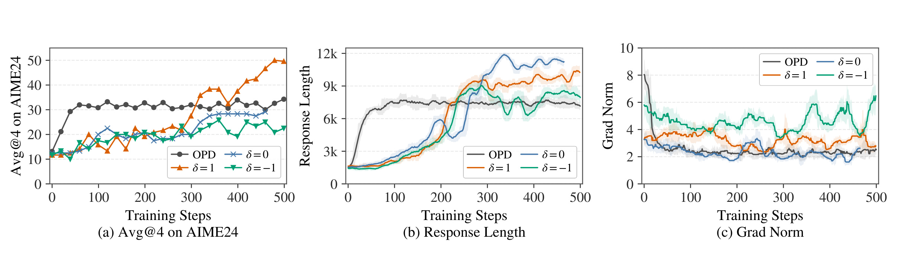
Figure 5 的信息不只在最终黑线和橙线谁更高。左图中 $\delta=1$ 在中后期继续向 50% 爬升，而固定负优势与 OPD 更早进入平台；中图表明几个有效方案都会诱发更长响应，但长度不能区分最优的优势分配；右图中 $\delta=-1$ 的高波动提示，对低熵位置过度惩罚会反复撞击高置信结构。与 Figure 4 联系起来，方法导出实际上经过了两层消融：先确定“负”比教师数值重要，再确定“高熵更负”比全 token 同强度更好。同时，三个子图提供了一个反例检查：如果只追求响应变长，$\delta=-1$ 和其他方案也会有长度增长，却没有相同准确率，因此决定收益的不是单一长度指标，而是哪些熵位置在被如何更新。这也为后文区分“长”与“有效反思”预留了实验接口。
3.2 跨模型与跨任务主结果
主实验在 Qwen3-1.7B、Qwen3-4B 和 Qwen3.5-9B 上进行。除非特别说明，训练和评测都关闭 thinking mode；训练只用 DAPO-17k 的问题，OPSA 不访问标签或 ground-truth 答案。数学域内基准为 AIME24、AIME25 和 HMMT25，域外泛化使用代码生成 MBPP+ 和通用问答 GPQA-Diamond。评测由 SGLang 0.5.14 完成，temperature=0.7、top-k=20、top-p=0.8，每题采 32 条响应；Avg@32 是 32 次采样的平均正确率，Pass@32 是至少一次答对的题目比例，后者更关心探索覆盖面。
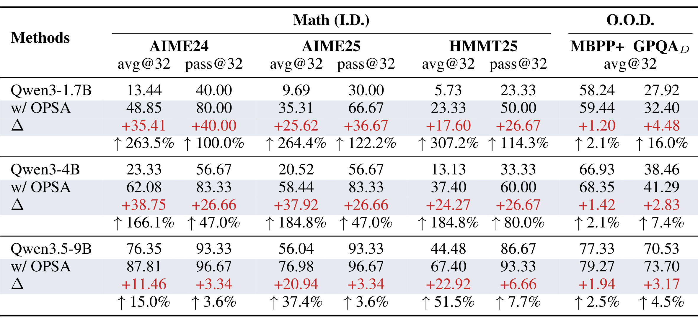
Table 2 中最显著的是小模型数学推理：Qwen3-1.7B 在 AIME24 上从 13.44/40.00 升到 48.85/80.00（Avg/Pass@32），Avg 绝对增加 35.41 点、相对提升 263.5%；AIME25 从 9.69/30.00 升到 35.31/66.67，HMMT25 从 5.73/23.33 升到 23.33/50.00。Qwen3-4B 的 AIME24 Avg@32 从 23.33 升到 62.08，Qwen3.5-9B 虽然基座已有 76.35，仍升到 87.81；后者在 HMMT25 还从 44.48 升到 67.40。这说明收益不仅存在于未充分后训练的 1.7B 模型。但域外增益明显较小：1.7B 在 MBPP+ 只从 58.24 到 59.44，GPQA-Diamond 从 27.92 到 32.40；9B 上分别从 77.33 到 79.27、70.53 到 73.70。所以论文确实展示跨域泛化，但最强证据仍然在与 DAPO-17k 更接近的数学推理。
这些结果也要区分 Avg 和 Pass。OPSA 不只提高单次采样的命中率，在 Qwen3 系列上 Pass@32 也有 50%-122% 的相对增益，这与“整体变尖后多样性一定崩溃”的担忧不相符。但 Qwen3.5-9B 的 Pass@32 原本已接近饱和，AIME 和 HMMT 只再增 3.34 和 6.66 点，说明起点越强，可继续扩展的采样前沿越小。这和作者在局限中对“已经过度尖锐的重后训练模型”的担心相互印证。
3.3 与有/无外部监督基线的比较
横向基线覆盖几种不同信号来源：GRPO 需要可验证 reward；TTRL 不用外部监督，但以 self-consistency 构造伪答案；OPD 需要外部教师 logits；OPSD 用带 hint 的学生分布作教师；OPSA 则只用自身 logp 与熵。公平性上有两个需注意的点：TTRL 直接在 AIME24 上做 test-time training 并选最佳检查点；OPD 使用 Qwen3-4B-Instruct 作 1.7B 教师。因而它们不是只改一个 loss 的严格同资源对照，表格更适合说明实际方案之间的整体差异。
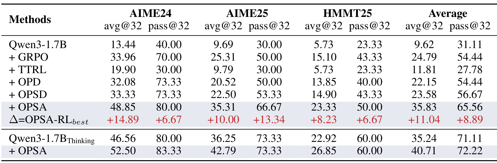
Table 3 中，OPSA 在非思考模式下的三个数学基准平均 Avg@32/Pass@32 为 35.83/65.56，而各列最佳非 OPSA 基线合成的差值为 +11.04/+8.89。看具体任务，AIME24 上 OPSA 为 48.85/80.00，GRPO 为 33.96/70.00，OPD 为 32.08/73.33，OPSD 为 33.33/73.33；AIME25 上 OPSA 为 35.31/66.67，也高于所有对照。TTRL 的 Pass@32 由基座 31.11 的三任务平均降到 27.78，符合作者对 self-consistency 将分布锁在局部模态的判断。另一行显示，开启 thinking mode 时，基座 1.7B 的平均 Avg@32 为 35.24，OPSA 为 40.71；收益仍在，但 Pass@32 只从 71.11 到 72.22，比关闭 thinking 时要小得多。
附录 Table 7 还增加了 NSR。NSR 只对整条错误轨迹的所有 token 给固定负优势，需要可验证的正误信号；OPSA 则无论轨迹最终答对与否，都只在低 logp token 上做熵自适应负更新。NSR 的三任务平均 Avg@32/Pass@32 为 24.13/58.89，OPSA 是 35.83/65.56。这一差异说明“负强化”本身不足以概括 OPSA，哪些 token 受压制、在一条轨迹内如何根据熵分级，依然影响最终效果。
3.4 fork、多样性与 token 比例消融
为了检查反思 fork 机制，作者先定义一组反思词，包括 wait、however、but、alternatively、hmm、perhaps、check、might和 actually。训练时仍先找每条响应 lowest-20%-logp 位置，再检查学生 top-5 候选中是否有这些词；若有，将该位置判为反思 fork，并从 OPSA loss 中排除。这不是随机减少 token 数，而是针对“头部重分配会促进反思分支”的定向干预。
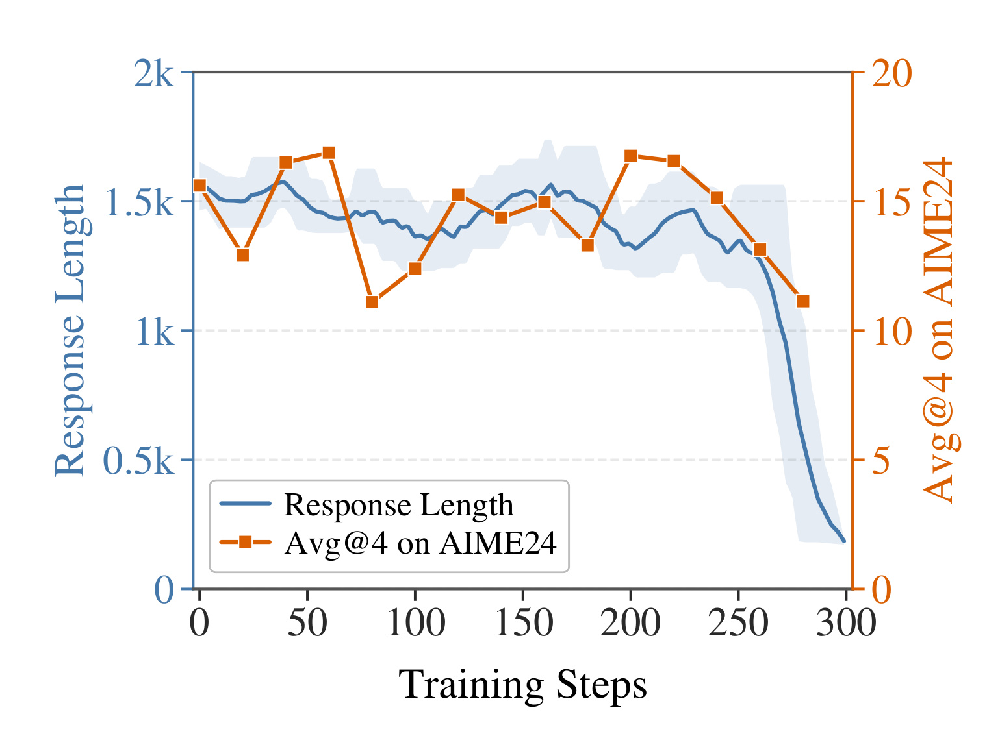
Figure 8 中，遮蔽 fork 后响应长度大部分时间维持在约 1.3k-1.7k，没有复现标准 OPSA 向 10k 以上长推理的增长；AIME24 Avg@4 也始终在较低区间波动。到约 300 步时，响应长度还出现显著下跌。这给出了一个强于“反思词变多与准确率正相关”的结果：直接不让 OPSA 更新这些位置，长度和准确率两类收益同时几乎消失。不过它仍不是完全的因果证明：基于九个英文词和 top-5 候选的 fork 检测可能同时移除了其他高信息位置，而不只是“反思”语义本身。
多样性采用 token 级 4-gram 的 Jaccard 距离。对响应 $r_i,r_j$ 只取前 $L$ 个 token，记其唯一 4-gram 集合为 $G_4$，公式（6）为：
符号解释：$L\in\{512,1024,2048,4096,\mathrm{Full}\}$ 是截断长度，交集越小则 $d_J$ 越大，表示两条响应越不相似。每道 AIME24 题有 $R=32$ 条采样，全部 $P=30$ 题先做题内两两平均，再做宏平均，对应公式（7）：
符号解释：$p$ 是题目索引，$i,j$ 是同题不同采样索引，$2/[R(R-1)]$ 将所有无序响应对归一化。最后用公式（8）记录 OPSA 相对基座的差值：
符号解释：$\Delta D_J<0$ 表示 OPSA 响应比基座更相似，值趋近零则表示两者在对应长度上多样性接近。
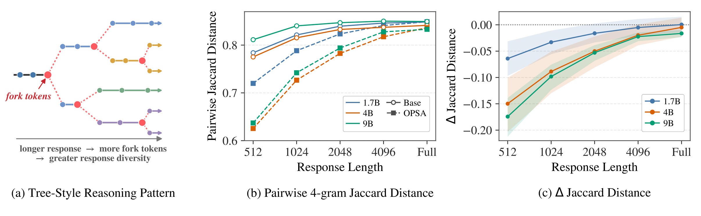
Figure 9 左侧画出作者的机制假设：响应越长，途中遇到的 fork 越多，每个 fork 的头部概率更均衡，32 次采样就可以走出更多路径。中图显示 1.7B、4B 和 9B 在短前缀上，OPSA 的 Jaccard 距离确实可能更低，说明分布尖锐化的影响存在；但随 $L$ 从 512 增到 Full，曲线差逐渐缩小。右图把差值直接画出，三个规模的 $\Delta D_J$ 都向零回归。这支持的是“长形响应的整体多样性可恢复到接近基座”，并不是“每个局部前缀的分布都不变”。这一区分恰好与 Figure 6 的位置级机制匹配。
最后的 token 比例消融比较 lowest 10%、20%、30% 和 40%。只训最低 10% 明显较差；作者分析这一小部分几乎都是 top-1 之外的极小尾部 token，一直对它们给负优势会过度尖锐化，快速降低熵，反而限制后续改进。20%、30% 和 40% 都能把 Avg@4 推到 45 以上，显示 OPSA 对比例不是针尖式敏感，但也不是“越少越精准”。
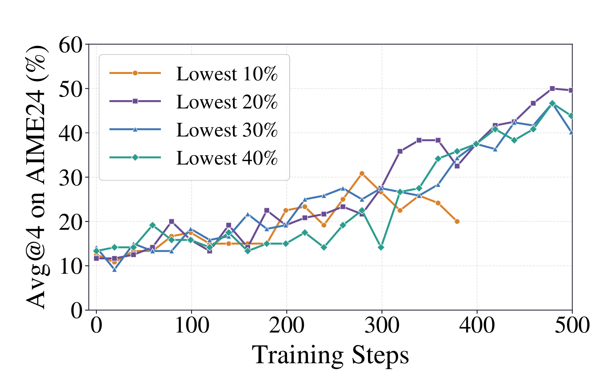
Figure 10 中最低 20%、30%、40% 三条曲线在前中期互有起伏，最终都进入 45-50 的区间，因此不应只根据某一个峰值宣称 20% 是唯一最优点。相对稳定的结论是：10% 明显不足，而在 20%-40% 内选一个适中比例都能实现主要收益。这对复现很重要，因为不同模型的 logp 标定与采样温度不同，固定 20% 未必总对应同一类语义位置。一个更可靠的工程实验是同时监控总熵、有效响应长度、Pass@k 与 lowest 集合中头/尾 token 的组成，而不只调一个百分比。曲线中 30% 和 40% 在约 300 步附近也有明显抖动，显示扩大训练集合并不是无代价地吸收更多有效 token，也可能把更多本已合理的分支纳入负更新；因此实践上应优先在 20%-40% 内做短程扫描，再根据稳定性与成本选点。
3.5 效率、等 token budget 与后续 RL 兼容性
训练实现使用 slime 0.2.4、Megatron 0.16.0rc0 与 SGLang 0.5.14，主超参包括 8 张 H100 GPU、学习率 $10^{-6}$、rollout/global batch 都为 64、每个 prompt 训练时采 1 条响应。训练解码使用 temperature=1.0、top-p=1.0、最长 12000 token，每 20 步验证，按验证集 Avg@4 选检查点。作者也使用 H200 做部分实验，因而下面的 step time 应视为这套软硬件配置下的实测，不是跨机器普适常数。
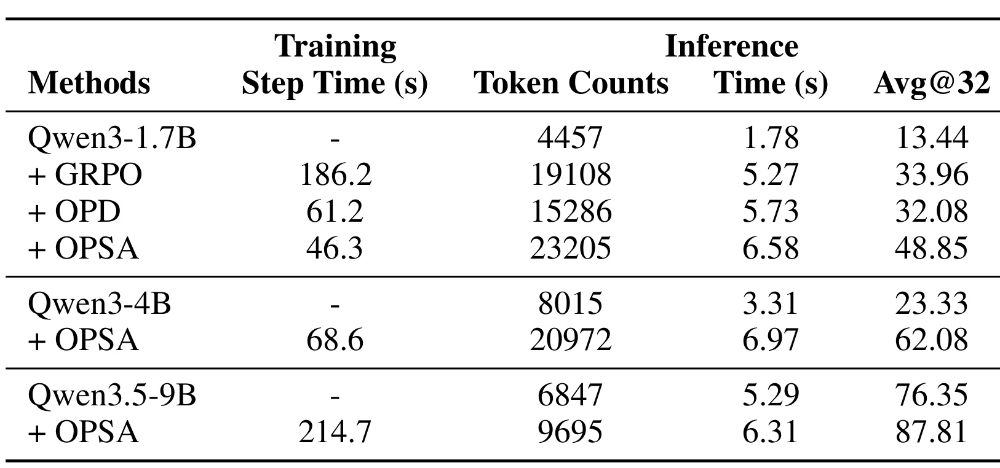
Table 6 展示 Qwen3-1.7B 上 GRPO 每步 186.2 秒，OPD 为 61.2 秒，OPSA 为 46.3 秒。OPD 和 OPSA 不需要为组内奖励做大量 rollout，所以比 GRPO 快；OPSA 又去掉教师部署和教师前向，因而比 OPD 更快。但不能把它简化为“端到端更省”：1.7B 基座平均只生成 4457 token、推理 1.78 秒，OPSA 变为 23205 token 和 6.58 秒；OPD 是 15286 token 和 5.73 秒。换取 48.85 Avg@32 的是更便宜的训练监督，以及更贵的长推理。在 4B 和 9B 上也有类似现象：OPSA 把 4B 的 token 数从 8015 提到 20972，9B 从 6847 提到 9695。实际部署必须把训练集群节省和在线生成负载分开算账。
作者为排除“只要让基线生成同样长就会一样准”，给 GRPO 和 OPD 做了等 token budget 控制：先生成基线响应，移除终止 \boxed{} 答案，追加一个 wait，再设最小生成长度继续解码，直到 token 数接近 OPSA，取达到长度后第一个完整答案评测。
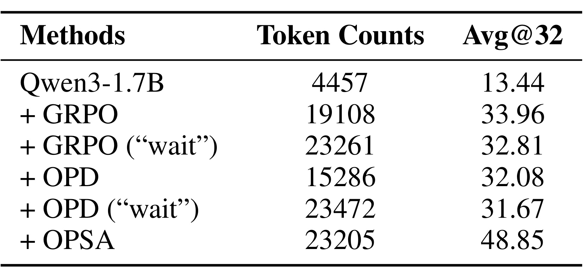
Table 8 把长度这个混淆因子显式拆出：GRPO 原始生成 19108 token、Avg@32 为 33.96，追加 wait 并延长到 23261 token 后反而是 32.81；OPD 从 15286 token/32.08 变为 23472 token/31.67；OPSA 在 23205 token 下为 48.85。因此将响应机械拉长并不能复现 OPSA，增益更符合“训练已经改写各位置的概率结构，使额外 token 走进更有效的反思分支”。不过这个控制也有局限：在已完成的基线轨迹末尾追加 wait，不等价于训练中从早期 fork 就选择另一条路，所以它能排除简单长度解释，但不能单独证明全部分布机制。
最后，作者用 Qwen3-4B 的 OPSA 检查点冷启动 GRPO，在 DAPO-17k 上继续有 reward 的训练。这里的问题是：OPSA 先压尾部、降总熵，会不会已经把后续 RL 需要的探索空间用完？
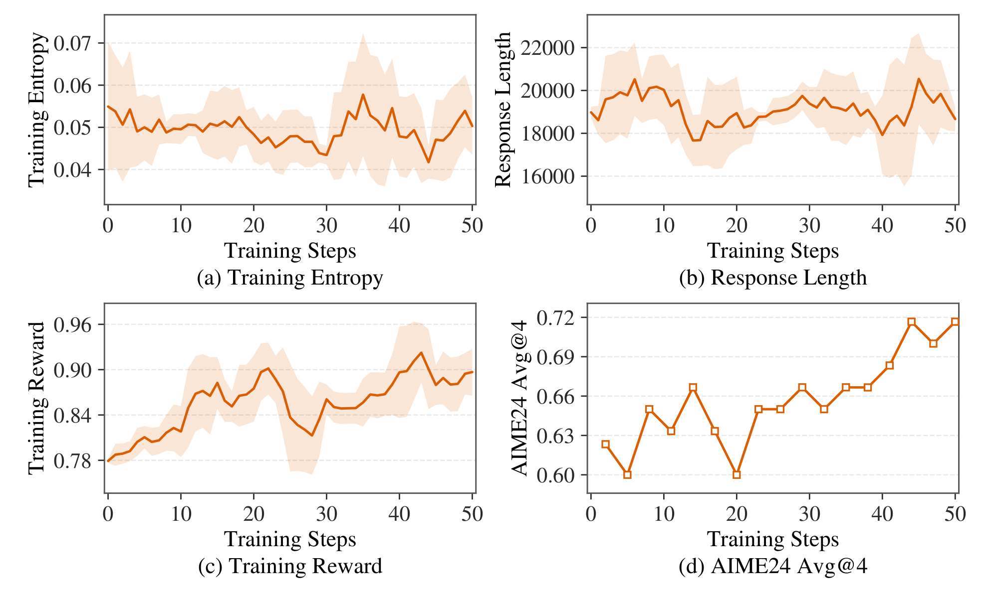
Figure 12 显示训练熵在 0.05 左右波动，响应长度在约 18k-20k 区间，奖励和 AIME24 Avg@4 则总体上升。作者报告约 40 个训练步后 Avg@4 再提高约 9 个百分点，曲线平滑且没有崩溃迹象。这表明 OPSA 至少在 4B 和当前训练长度下不会封死后续 GRPO，反而可以先在不需要 reward 的阶段得到一个更强起点，再用稀疏正向奖励拓展。四个子图还显示，这一继续改进并不需要重新把熵抬回基座水平：熵只是低幅波动，奖励与 Avg@4 仍可以向上，这与论文“探索取决于不确定性在位置之间如何分配，而非总熵越高越好”的判断一致。但这只是一个模型、一个数据集和 50 步内的冷启动实验，尚不能推出两阶段组合在大规模训练中总是更省或更稳定。
4. 总结
4.1 我的判断
这篇论文最有价值的部分不是“OPSA 比 OPD 高多少”，而是它把一个看似必须依赖强教师的方法，经过可验证的删减实验压缩成了“低 logp token+负优势+熵幅度”。证据链是连续的：教师优势噪声高，而学生对噪声不敏感；高 logp token 几乎没有有效梯度；只给低 logp token 固定负优势已能复现主要改进；再把负幅度与熵正相关，性能和稳定性进一步提升。因此“OPD 可能不主要在做教师知识蒸馏”是有较强实证支撑的机制质疑，而不是标题党式否定。
对工程而言，OPSA 的优势是不需要教师白盒 logits、共享词表、参考答案或 verifier，而且训练 step time 比 OPD 更低。它可以被视为一种先做分布整形的冷启动，后面再接 GRPO 等有奖励训练。但在线成本并没有自动下降：OPSA 明显提高响应长度，1.7B 推理 token 数约从 4.5k 升至 23.2k。如果服务有严格延迟、token 成本或最长上下文限制，应先用等 token budget 和真实请求分布复测，不能只看 Avg@32。
更审慎的定位是：OPSA 很像一个无标签的策略空间“去尾部整形器”，而不是替代所有 reward 的能力发现器。它能利用学生已有的头部候选结构，减少偶然进入的低概率错路，并在高熵岔口保持多个较强候选。但如果正确新分支根本不在学生当前头部附近，这种重分配就难以凭空创造知识。这个区分也解释了为什么 OPSA 与后续 GRPO 可以互补：前者先整理现有分布，后者再用可验证结果信号识别哪些新轨迹真正值得强化。
因此，如果要把 OPSA 迁移到代码 Agent、工具调用或个性化生成，首先要确认“低概率尾部”在该任务中更多是无效动作，还是有价值的少数创新。数学题的可行推理路径和最终答案相对受约束，压尾部很可能在减少算术或格式误入；开放式创作和长期探索却可能需要保留更多罕见分支。这一任务依赖性是判断该方法能否超出数学后训练的核心。
4.2 局限与后续跟进
局限至少有六项。第一，最大只验证到 9B，尚不知道更大 dense 模型或 MoE 上的 logp/熵结构是否仍允许同样自适应。第二，方法主要重分配现有概率质量，对已高度后训练、输出过度尖锐的模型，可能缺少可被重塑的探索前沿。第三，thinking mode 下 Pass@k 增益很小，说明 OPSA 更像重排已有能力，不一定能创造新的正确推理分支。第四，最强收益集中在 DAPO-17k 训练后的数学基准，MBPP+ 和 GPQA 虽有改进，幅度远小于数学。第五，低 logp 不总是错误；某些罕见但正确的创新 token 也可能落入 Slowest20，持续给负优势可能损害真正的边界探索。第六，作者虽排除了简单长度解释，但 OPD 与 OPSA 共有的响应长度增长动力学仍缺少完整理论。
后续最值得做的三组实验是：其一，在更大 dense 和 MoE 模型上同时扫描 token 比例、采样温度和熵幅度，检查 rollout 内 min-max 归一化是否会被极端熵位置主导。其二，把 OPSA 与 GRPO/NSR 做同 token、同 wall-clock、同 GPU-hour 的端到端对照，再用在线延迟与任务成功率选 Pareto 前沿，避免将训练提速和推理变慢混为一个“更高效”。其三，对被压低的 Slowest20 token 做语义和因果分类：区分明显格式/算术错误、有益反思 fork、罕见正确分支和无意义尾部，再判断只靠 logp+熵是否足够。如果这三组证据成立，OPSA 就不只是一个数学推理技巧，而可能成为无标签后训练中可插拔的分布整形阶段。